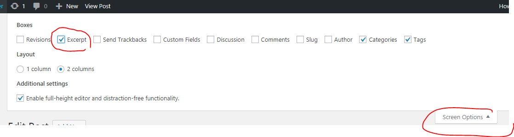
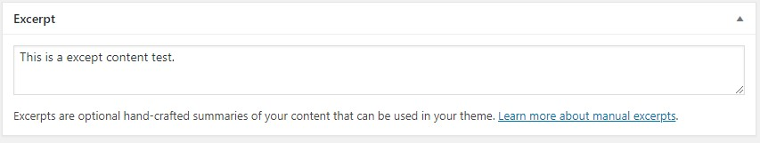
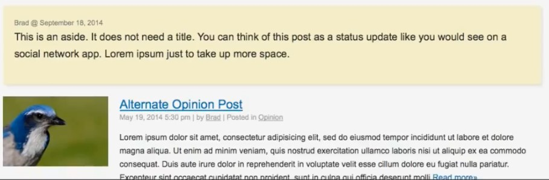

Wordpress Documentation
Header and Footer
To include header footer to Theme.
<?php
get_header();
?>
<?php
get_footer();
?>
Content of header.php
<!DOCTYPE html>
<html <?php language_attributes(); ?>>
<head>
<meta charset="<?php bloginfo('charset'); ?>">
<meta name="viewport" content="width=device-width">
<title><?php bloginfo('name'); ?></title>
<?php wp_head(); ?>
</head>
<body <?php body_class(); ?>>
<header>
<h1><a href="<?php echo home_url(); ?>"><?php bloginfo('name'); ?></a></h1>
<h5><?php bloginfo('description'); ?>
</header>
Content of footer.php
<footer>
<p><?php bloginfo('name'); ?> - &copy; 2018
</footer>
<?php wp_footer(); ?>
</body>
</html>
Import css to header
Edit the functions.php - The css will be imported using wp_head() to the page.
<?php
function learningwordpress_resources() {
wp_enqueue_style('style', get_stylesheet_uri());
}
add_action('wp_enqueue_scripts', 'learningwordpress_resources');
?>
Navigation
To display menu in theme
primary and footer are user define
Header
<nav>
<ul>
<?php
$args = array(
'theme_location' => 'primary'
);
wp_nav_menu($args);
?>
</ul>
</nav>
Footer
<nav>
<ul>
<?php
$args = array(
'theme_location' => 'footer'
);
wp_nav_menu($args);
?>
</ul>
</nav>
Create List of Menu to Admin
Create display location to functions.php
register_nav_menus(array(
'primary' => __('Primary Menus'),
'footer' => __('Footer Menus'),
));
Create list of menus in admin. Set display location as checkbox to where it will display the created list to the theme.
Add navigation active css
To add css active to the current menu item, use .current-menu-item
nav ul li.current-menu-item a
to add css active if the child page is selected
nav ul li.current-page-ancestor a
Home
Create a page with title HOME and publish. Also create BLOG and publish.
In the setting > reading
1.) change your Homepage value to Home. For the first load, your created page will automatically open as your home page.
2.) change Post page value to Blog. The index.html will become as the Blog page.
Create a file front-page.php , when the home page is open, the wordpress will automatically look for this file and load if it is existed.
Now you can modify the fron-page.php into your own code.
<?php
if(have_posts()):
while (have_posts()) : the_post();
the_permalink();
the_title();
the_content();
endwhile;
else :
echo "<p>Page not found!</p>";
endif;
?>
Post
Display default post
<?php
if(have_posts()):
while (have_posts()) : the_post();
the_permalink();
the_title();
the_content();
endwhile;
else :
echo "<p>No post found!</p>";
endif;
?>
Date
<?php the_time('m/d/y h:i:s a'); ?>
Author
<?php the_author(); ?>
Anchor Link
<a href="<?php echo get_author_posts_url(get_the_author_meta('ID')); ?>">
Category
insert this code inside the while loop of post
<?php
$categories = get_the_category();
$separator = ", ";
$output = "";
if($categories){
foreach($categories as $category) {
$output .= '<a href="'.get_category_link($category->term_id).'">'.$category->cat_name.'</a>'.$separator;
}
echo trim($output, $separator);
}
?>
Excerpt
First Way
Using readmore button tag at wp post panel, automatical the page will add link for readmore.
And add this code to page.
the_content('Readmore &raquo;');
Second Way
Using excerpt tag to except all post within the page.
Activate the except features of wordpress.

After activating, a new field will show in the Add post page. That's the place where you put your short description in every post.

Change your code to your page from the_content() to the_excerpt
the_excerpt();
Limit characters in except
To limit the maximum char the_excerpt() can display, add this code to function.php
function custom_excerpt_length(){
return 25;
}
add_filter('excerpt_length','custom_excerpt_length');
To display excerpt text only if it has. And if not, display the full content.
<?php if($post->post_excerpt){ ?>
<p><?php echo get_the_excerpt(); ?></p>
<p><a href="<?php the_permalink(); ?>">Read more &raquo;</a></p>
<?php } else { ?>
<p><?php the_content(); ?></p>
<?php } ?>
Image
To add image in post, add this code to function.php
function learningwordpress_setup(){
add_theme_support('post-thumbnails');
}
add_action('after_setup_theme','learningwordpress_setup');
After adding the code, a new field will show in the Add post page.
To display the image in page
<?php the_post_thumbnail();?>
Image Aspect Ratio
Used to crop and add size limit of the image to be shown in page.
Format: Add_image_size(‘custom-name’, width, height, crop);
Add this code to function.php
function learningwordpress_setup(){
add_theme_support('post-thumbnails');
add_image_size('small-thumbnail', 180, 120, true); //width, height, croping
add_image_size('banner-image', 920, 210, array('left','top')); //crop position left top
}
add_action('after_setup_theme','learningwordpress_setup');
To display the image to page
<?php the_post_thumbnail('small-thumbnail');?>
To check if post have image
if ( has_post_thumbnail() ){ }
Single Post Page
Single.php – page is used when you click readmore/permalink at post. Display the single post page.
Same code with post
<?php
if(have_posts()):
while (have_posts()) : the_post();
the_permalink();
the_title();
the_content();
endwhile;
else :
echo "<p>No post found!</p>";
endif;
?>
Get Template Part
Use to repeat code, like post article.
get template part is like a function or include.
Example: Create a file name content-post.php with code like this.
<?php
the_permalink();
the_title();
the_content();
?>
To call this content-post.php
if(have_posts()):
while (have_posts()) : the_post();
get_template_part('content-post');
endwhile;
else :
echo "<p>No post found!</p>";
endif;
Post Format
Post format – is formatting single post with different layout. Ex you loop post have single post that have video or a gallery images, or absolute link.
Note: you should familiar on get template part method, if not please see the Get Template Part section.
Standard list of 9 post format:
- Aside
- Gallery
- Link
- Image
- Quote
- Status
- Video
- Audio
- Chat
Step 1: enable the post format by adding this to functions.php
function learningwordpress_setup(){
//add post format support
add_theme_support('post-formats',array('aside','gallery','link'));
}
add_action('after_setup_theme','learningwordpress_setup');
After saving, this post format will show in add new post in admin
Step 2: to use the post format. Example you created aside post.
get_template_part('content-post', get_post_format());
This code will automatically get the format of post either general(default), aside, gallery, link, ect by using the slug of page.
Example create a page of content-post-aside.php
<article class="post post-aside">
<p class="mini-meta"><?php the_author(); ?> @ <?php the_time('F j, Y'); ?></p>
<?php the_content(); ?>
</article>
Sample Output:

Example create a page of content-post-aside.php
<article class="post post-link">
<a href="<?php echo get_the_content(); ?>" target="_blank"><?php the_title(); ?></a>
</article>
Instead of using the_content(), better use echo get_the_content() to avoid text format entered in the admin like font size, underline, color, ect.
Sample Output:
Example create a page of content-post-gallery.php
<article class="post post-gallery">
<h2><?php the_title(); ?></h2>
<?php the_content(); ?>
</article>
How to add images:
Sample Output:
WP Query
Wp_query used as parameter of post to determine what kind or category of post.
To set the parameter. Set this code before loop.
$posts = new WP_Query('cat=4&post_per_page=2&order_by=title&order=ASC');
- cat – category of post. You can get category id by opening the category in admin page and look on url parameter ID.
- Post_per_page – maximum number of post will be shown on page.
- Order_by – title, rand
- Order – ASC or DESC
And set this code to end of the loop.
wp_reset_postdata();
To use the parameter.
<?php
if ($posts->have_posts()) :
while ($posts->have_posts()) : $posts->the_post();
?>
<h2><?php the_title(); ?></h2>
<?php
endwhile;
else :
echo "<p>No content found!</p>";
endif;
?>
Pagination
First is limit the post to display by adjusting Settings > Reading > Blog pages show at most
OR you can use WP_Query to limit the page per post.
$posts = new WP_Query('posts_per_page=2');
To display pagination on search result and blog page.
This will not work on slug page or custom page because the next is for next page not next post.
paginate_links();
if(have_posts()):
while (have_posts()) : the_post();
…
endwhile;
echo paginate_links();
To display pagination on post inside custom page. Use get_query_var
<?php
$paged = get_query_var('paged'); //most pages
$page = get_query_var('page'); //statis front page
$posts = new WP_Query(array(
'category_name' => 'about',
'posts_per_page' => '2',
'paged' => $paged,
'page' => $page,
));
if($posts->have_posts()):
while ($posts->have_posts()) : $posts->the_post();
?>
<li><a href="<?php the_permalink(); ?>"><?php the_title(); ?></a></li>
<?php
endwhile;
echo paginate_links(array(
'total' => $posts->max_num_pages
));
else :
echo "<p>No post found!</p>";
endif;
?>
Page
Page.php – default page display of pages.
Same code with post
<?php
if(have_posts()):
while (have_posts()) : the_post();
the_permalink();
the_title();
the_content();
endwhile;
else :
echo "<p>Page not found!</p>";
endif;
?>
Display pages
wp_list_pages();
Conditional Logic – if (is_page())
Template Page with matching by Slug or ID
• Page-[slug-name].php – example page-portfolio.php - where portfolio is the slug. The portfolio page automaticaly render the page-portfolio.php
• Page-[page-id].php
<?php
if(is_page(14)){
}
if(is_page('portfolio')){
}
?>
Custom Template
Any-page-name.php - you can use any filename just declare the tag /* Template Name: Layout name here */ as comment inside the first line of the page.
< ?php
/*
Template Name: Layout name here
*/
get_header();
Archive Page
Archive.php - page to display the all post of specific category, author, date, month, day.
To view use url like
Code same as default post
?php
if(have_posts()):
while (have_posts()) : the_post();
//code here
endwhile;
else :
echo "<p>No post found!</p>";
endif;
?>
To add header title if page is category, author, tag, month, day or year
<h2>
<?php
if(is_category()){
single_cat_title();
}
elseif(is_tag()){
single_tag_title();
}
elseif(is_author()){
the_post();
echo 'Author Archives:'.get_the_author();
rewind_posts();
}
elseif(is_day()){
echo 'Daily Archives:'.get_the_date();
}
elseif(is_month()){
echo 'Monthly Archives:'.get_the_date('F Y');
}
elseif(is_year()){
echo 'Year Archives:'.get_the_date('Y');
}
else {
echo 'Archives';
}
?>
</h2>
Search
Default Form
Code for page (automatically create search form)
<?php get_search_form(); ?>
Form will show to the page like this.
Customize Form
To customize the search form default code, create a file searchform.php add enter this code. This form will loaded by page when you use get_search_form() tag.
<form role="search" method="get" id="searchform" action="<?phg echo home_url('/'); ?>">
<div>
<label class="screen-reader-text" for="s">Search:</label>
<input type="text" value="" name="s" id="s" />
<input type="submit" id="searchsubmit" value="Search" />
</div>
</form>
Search result
To output the search results, create a file search.php
Use the_search_query() to get the value of search.
<?php
if(have_posts()):
?>
<h2>Search results for <?php the_search_query(); ?></h2>
<?php
while (have_posts()) : the_post();
the_permalink();
the_title();
the_excerpt();
endwhile;
else :
echo "<p>No post found!</p>";
endif;
?>
To add conditional if page is on search or not
if(is_search()){
}
Custom Functions
Get Parent ID
Custom function to get the parent id of the child page / code put in functions.php
function get_top_ancestor_id() {
global $post;
if($post->post_parent) {
$ancestor = array_reverse(get_post_ancestors($post->ID));
return $ancestor[0];
}
return $post->ID;
}
To use is like this
$args = array(
'child_of' => get_top_ancestor_id(),
'title_li' => ''
);
wp_list_pages($args);
or
<?php echo get_the_title(get_top_ancestor_id()); ?>
Check if page have parent – return number of parent
function has_children(){
global $post;
$pages = get_pages('child_of='.$post->ID);
return count($pages);
}
TOP